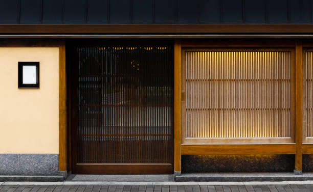
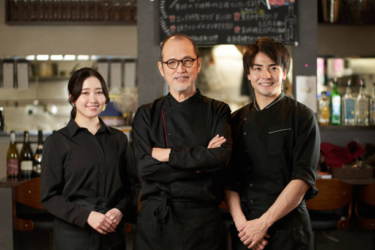

<!DOCTYPE html>
<html lang="en">
    <meta charset = "UTF-8">
    <meta name = "viewport" content = "width=device-width, initial-scale=1.0">
    <title>Historia</title>
    <link rel= "stylesheet" href= "styles/style.css">
</html>
<body>
    <header>
        <h1>YOMSUSH</h1>
        <nav>
            <ul>
                <li><a href= "Inicio.html">Inicio</a></li>
                <li><a href= "Historia.html">Nuestra Historia</a></li>
                <li><a href= "Menuplatillos.html">Nuestro Menu</a></li>
            </ul>
        </nav>
    </header>
    <main>
        <section id= "Historia-Detallada">
            <h2>Nuestra Historia</h2>

            <p>
                Yomsush tiene sus raíces en la fascinante historia de su fundador, Yomoyuki Tanaka, conocido cariñosamente como "Yomo". Originario de una pequeña ciudad costera en Japón, Yomo creció rodeado por los ricos aromas y vibrantes colores del mercado de pescado local, donde su familia había comerciado durante generaciones. Desde muy joven, desarrolló una pasión por la cocina, en especial por el arte del sushi, que le permitió explorar su creatividad mientras honraba las tradiciones culinarias de su país.
            </p>
            
            <h3>
                Nuestros Inicios
            </h3>
            <p>
                Después de perfeccionar sus habilidades en algunas de las cocinas más renombradas de Tokio, Yomo sintió que era momento de llevar su pasión más allá de las fronteras de Japón. Impulsado por su espíritu aventurero y el deseo de compartir su arte con nuevas audiencias, Yomo decidió embarcarse en un viaje hacia México, un país que lo intrigaba por su rica cultura y su cálida hospitalidad.
            </p>
            <p>
                En 2005, Yomo llegó a Monterrey, una ciudad vibrante y llena de vida que lo recibió con los brazos abiertos. Fascinado por la mezcla de tradición y modernidad que caracterizaba la ciudad, Yomo decidió establecer allí su restaurante, al que llamó "Yomsush", un nombre que combinaba su apodo con el término "sushi", simbolizando la unión de su herencia japonesa con su nueva vida en México.
            </p>
            
            <h3>Crecimiento y Evolucion</h3>
            <p>
                Desde sus primeros días, Yomsush se distinguió por ofrecer una experiencia auténtica y única. Yomo selecciona personalmente cada ingrediente, trabajando con pescadores y agricultores locales para garantizar que solo los productos más frescos y de la más alta calidad lleguen a sus comensales. El restaurante rápidamente ganó popularidad por sus nigiris y makis, que capturan la esencia del sushi tradicional japonés con un toque adaptado al paladar mexicano.
            </p>
            <p>
                Yomsush no es solo un lugar para disfrutar de sushi; es un rincón de Japón en el corazón de Monterrey, donde se celebra la cultura y la hospitalidad japonesa. Con su ambiente acogedor y su enfoque en la calidad, Yomsush se ha convertido en un punto de encuentro para los amantes del sushi, tanto locales como extranjeros.
            </p>
            <p>
                Hoy, Yomsush sigue siendo un reflejo del amor de Yomo por el sushi y su deseo de compartir su arte culinario con el mundo, mientras honra tanto sus raíces japonesas como su conexión con la vibrante comunidad de Monterrey.
            </p>

            <h3>Recuerdos</h3>
            <div class= "Galeria">
                
                
            </div>

            <h3>Testimonios</h3>
            <blockquote>
                <p>"Yomsush es mi lugar favorito desde hace años. La combinación de sabores tradicionales es simplemente exquisita."</p>
                <footer>- Alejandro Zertuche</footer>
            </blockquote>
            <blockquote>
                <p>"Yomsush es mi lugar favorito para sushi en Monterrey. La calidad es excepcional y el toque único que le da Yomo a cada platillo hace que cada visita sea especial. ¡Altamente recomendado!"</p>
                <footer>- Ana Perez</footer>
            </blockquote>

        </section>
        <footer>
            <p>&copy; 2024 Yomsush</p>
        </footer>
    </main>
</body>